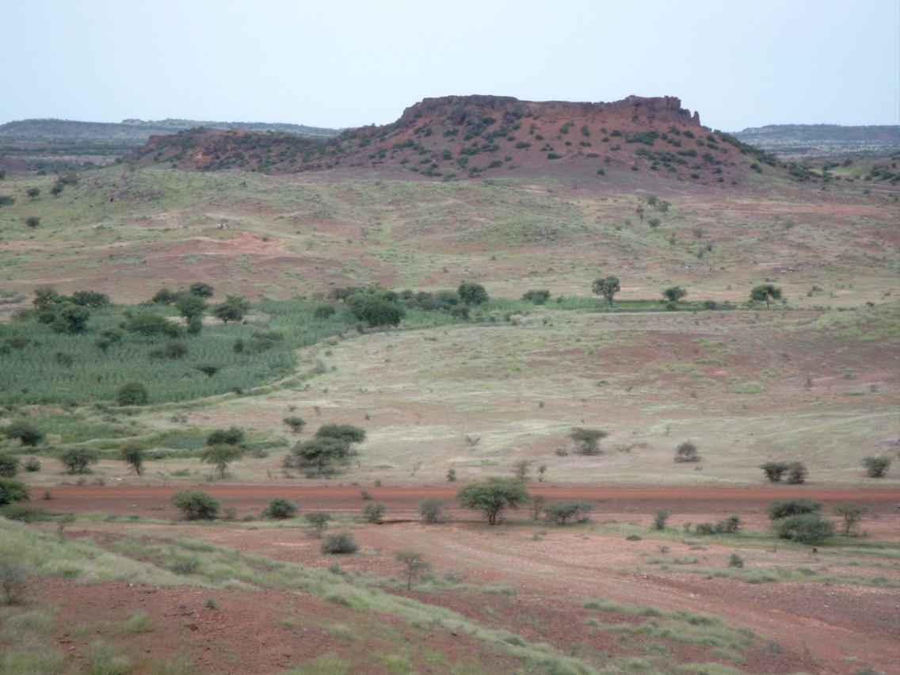
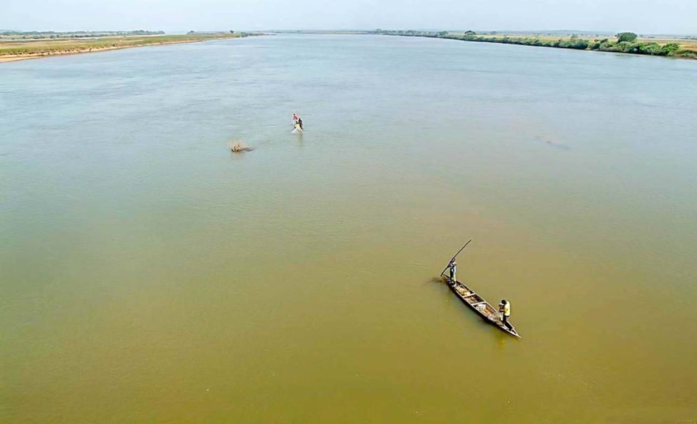
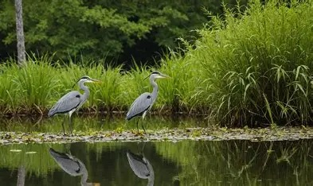
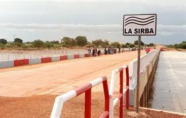

Présentation
Une nouvelle région au cœur du développement
La Sirba est l'une des quatre nouvelles régions créées lors de la réorganisation territoriale du 2 juillet 2025, qui porte désormais le Burkina Faso à 17 régions et 47 provinces. Elle doit son appellation à la rivière Sirba, affluent du fleuve Niger, connue pour son rôle vital dans l'irrigation et la vie des communautés riveraines. La région regroupe des provinces issues principalement de l'ancienne région de l'Est, avec une population majoritairement gourmantché, mais aussi des communautés peules et mossis. La création de la région de la Sirba vise à rapprocher l'administration des habitants, améliorer la gestion des ressources et stimuler un développement plus équilibré dans cette partie du pays.
Traditions Et Culture de la Region de Sirba
La région de Sirba au Burkina Faso est riche en traditions et en coutumes qui reflètent la diversité culturelle de la région. Les Gourmantché, qui habitent cette région, ont des pratiques culturelles et religieuses uniques qui sont transmises de génération en génération. Les traditions incluent des rituels spirituels, des célébrations saisonnières, et des activités artistiques qui sont essentielles à la vie communautaire. Les festivals, comme le Festival Dilembu, sont des événements marquants qui célèbrent ces traditions et promeuvent le patrimoine culturel de la région

Géographie Et Climat de la Region de Sirba
La région de la Sirba est située dans la partie orientale du Burkina Faso, à l'intersection des bassins versants du fleuve Niger et de la rivière Sirba. Elle est caractérisée par un climat tropical avec une saison des pluies qui s'étend de avril à septembre, suivie d'une saison sèche qui dure jusqu'à mars. Les températures sont généralement élevées tout au long de l'année, avec des variations saisonnières.
La région de la Sirba occupe la zone de transition entre la savane soudanienne et les franges sahéliennes de l'est du Burkina Faso
À perte de vue s'étend un plateau de latérite rouge-sang, cette terre ferrugineuse caracteristique de l'Est burkinabè, dont la teinte cuivrée embrase le paysage d'une lumière chaude et ancienne, comme si le sol lui-même portait en lui des siècles de mémoire et de soleil.
Sur la piste de latérite passent chaque jour les éleveurs peuls conduisant leurs troupeaux vers les pâturages de saison, les cultivateurs gourmanché et bissa rejoignant leurs champs, et les commerçants reliant Bogandé aux marchés hebdomadaires des villages environnants. Car la Sirba, c'est aussi cela : une région nouvelle, née d'une volonté de mieux gouverner et sécuriser un territoire stratégique aux confins de l'Est, dans un contexte de renforcement de la souveraineté burkinabè sur ses marges.

Rivière De Sirba
La région de la Sirba est traversée par plusieurs cours d'eau, dont la rivière Sirba. Les principaux cours d'eau du Burkina Faso incluent le Mouhoun, le Nakambé, et le Nazinon, qui tarissent pendant une période de l'année. Le Mouhoun est le seul cours d'eau pérenne du pays. La Sirba, en tant qu'affluent du fleuve Niger, joue un rôle important dans l'hydrologie et la géographie de la région.

Zone De Faune
La région de Sirba au Burkina Faso offre des habitats variés propices à l’observation d’oiseaux et de petits mammifères, combinant savanes boisées, buissons et zones humides pour une riche biodiversité.
La réserve naturelle et les plaines autour du fleuve Sirba représentent des zones écologiquement diversifiées
Oiseaux : rollier d’Abyssinie, guêpier d’Orient et diverses espèces de passereaux fréquentes dans les zones arbustives et les bordures d’eau
Petits mammifères : rongeurs, petits marsupiaux et insectivores dans les buissons et herbes hautes, souvent observables grâce à des méthodes passives

Pont De Sirba
Le pont de Sirba est un ouvrage d'art important qui traverse la rivière Sirba, facilitant les déplacements et le commerce entre les communautés riveraines.
Inauguré en septembre 2018, est un ouvrage stratégique de 309 mètres reliant la RN18 et renforçant l’économie et la circulation dans la nouvelle région administrative de la Sirba, dans l’Est du Burkina Faso.
Le pont facilite la mobilité des personnes et des biens, réduisant les difficultés de transport dans la province de la Gnagna, anciennement partie de l’Est. Il soutient le développement économique, en particulier les échanges commerciaux, l’agriculture, la pêche et le tourisme dans la nouvelle région de la Sirba. L’infrastructure contribue également à la sécurité et au désenclavement des villages comme Piéla, tout en offrant un accès plus sûr pour les populations riveraines
